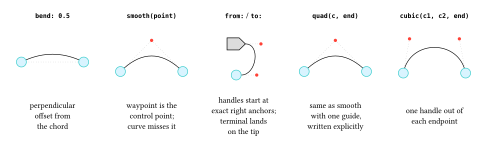

5 Drawing Edges
typ.edge(
..waypoints,
from: auto, to: auto, bend: 0,
highlight: auto, clip: auto,
label: none, label-pos: 0.5,
stroke: auto, preset: none,
style: (:), base-style: (:),
)An edge needs at least two waypoints and draws one continuous path through all of them. A waypoint can be a node, a port(...), an absolute (x, y) coordinate, a ref(name), a rel(dx, dy) (except in first position), a smooth(waypoint) guide, or an explicit line/quad/cubic path element. More than two waypoints form one path through all of them in order — not a separate edge per pair.
5.1 Deferred endpoints
typ.rel(dx, dy)Adds an offset from the preceding resolved waypoint. This has to be deferred rather than computed immediately, because the preceding waypoint might itself not have a known position yet — a port’s exact position isn’t resolved until the node’s measured outline is known, so rel after a port waits for that:
typ.edge(typ.port(g, "left"), typ.rel(-1, 0))typ.ref(name)Looks up a node emitted elsewhere in the same diagram by its name:. name must be a string, and a reference points to a node without emitting it — the node still needs its own bare statement, exactly as in Core Concepts:
#diagram({
typ.node(0, 0, name: "a")
typ.node(1, 0, name: "b")
typ.edge(typ.ref("a"), typ.ref("b"))
})Unknown references and duplicate node names are both errors.
5.2 Curves and control points
Four levels of control, from least to most explicit:
typ.edge(a, b, bend: 0.4)
typ.edge(a, typ.smooth((1, 1)), b)
typ.edge(a, b, from: right, to: (top, 1.5))
typ.edge(a, typ.quad((1, 1), b))
typ.edge(a, typ.cubic((0.3, 1), (1.7, 1), b))curves.typ
// Generates docs/img/curves.svg — a visual key to the five curve controls
// an edge. Regenerate with:
// typst compile --root . --ignore-system-fonts docs/img/curves.typ docs/img/curves.svg
#import "../../src/lib.typ" as typ
#let diagram = typ.diagram
#set page(width: auto, height: auto, margin: 8pt)
#set text(size: 8pt)
// Same sizes a real theme would use for a circular node and an arrow-shaped
// one — chosen so the from:/to: panel's boundary-anchor ratios below stay
// simple, exactly as they would for any theme using these shapes at these
// sizes.
#let dot = typ.node-type("dot", base-style: (shape: typ.shapes.circle, fill: aqua.lighten(70%), stroke: 0.6pt + teal, min-size: 9pt, inset: 4pt))
#let pointer = typ.node-type("pointer", base-style: (shape: typ.shapes.arrow, fill: luma(220), stroke: 0.6pt + black, min-size: 11pt, inset: 3pt))
#let dotted = (paint: gray, thickness: .4pt, dash: "dotted")
#let dot-style = (shape: typ.shapes.circle, fill: red, stroke: none, min-size: 3pt, inset: 0pt)
// Dotted guide lines from each endpoint to a control point, so you can see
// how the handle relates to the resulting curve. The control-point marker
// itself is passed in (rather than created here) because two same-kind
// nodes at one position de-duplicate — in the `smooth()` panel the marker
// *is* the waypoint.
#let guide(from-pt, ctrl, to-pt) = {
import typ: *
edge(from-pt, ctrl, stroke: dotted, clip: false)
edge(ctrl, to-pt, stroke: dotted, clip: false)
}
#let mark(pt) = typ.node(pt.at(0), pt.at(1), style: dot-style)
#table(
columns: 5,
align: center + horizon,
stroke: none,
column-gutter: 10pt,
row-gutter: 4pt,
[*`bend: 0.5`*],
[*`smooth(point)`*],
[*`from:` / `to:`*],
[*`quad(c, end)`*],
[*`cubic(c1, c2, end)`*],
diagram(scale: 1.1cm, {
import typ: *
edge(dot(0, 0), dot(2, 0), bend: 0.5)
edge(dot(0, 0), dot(2, 0), stroke: dotted, clip: false)
}),
diagram(scale: 1.1cm, {
import typ: *
// the red marker doubles as the waypoint the wire curves around
edge(dot(0, 0), smooth(node(1, 1, style: dot-style)), dot(2, 0))
guide((0, 0), (1, 1), (2, 0))
}),
diagram(scale: 1.1cm, {
import typ: *
// Boundary anchors in diagram units. Node geometry and the coordinate
// unit scale together, so these ratios stay constant here.
let dot-right = 4.5pt / 1cm
let pointer-right = (11pt / (1 + .32)) / 1cm
edge(dot(0, 0), pointer(0, 1), from: right, to: right)
edge((dot-right, 0), (dot-right + 0.5, 0), stroke: dotted, clip: false)
edge((pointer-right, 1), (pointer-right + 0.5, 1), stroke: dotted, clip: false)
mark((dot-right + 0.5, 0))
mark((pointer-right + 0.5, 1))
}),
diagram(scale: 1.1cm, {
import typ: *
edge(dot(0, 0), quad((1, 1), dot(2, 0)))
guide((0, 0), (1, 1), (2, 0))
mark((1, 1))
}),
diagram(scale: 1.1cm, {
import typ: *
edge(dot(0, 0), cubic((0.2, 1.1), (1.8, 1.1), dot(2, 0)))
edge((0, 0), (0.2, 1.1), stroke: dotted, clip: false)
edge((2, 0), (1.8, 1.1), stroke: dotted, clip: false)
mark((0.2, 1.1))
mark((1.8, 1.1))
}),
[perpendicular\ offset from\ the chord],
[waypoint is the\ control point;\ curve misses it],
[handles start at\ exact right anchors;\ terminal lands\ on the tip],
[same as smooth\ with one guide,\ written explicitly],
[one handle out of\ each endpoint],
)
bend:applies a signed perpendicular offset, in diagram units, to each plain segment — the easiest way to separate two wires that would otherwise overlap.smooth(waypoint)marks an interior waypoint as a quadratic Bézier guide rather than an exact corner. Consecutivesmooth()guides form one tangent-continuous run; a bare waypoint ends that run at its exact coordinate and starts a sharp corner for whatever follows — so one edge can freely mix smooth sections and sharp corners:typ.edge(a, typ.smooth((1, 1)), b, (3, 0), typ.smooth((4, 1)), c)The first and last waypoints must always stay exact; only interior ones can be wrapped in
smooth().from:/to:pull outward handles from the first and last endpoint of a simple two-waypoint edge. A direction is an angle,left/right/top/bottom, or an explicit(direction, strength)pair, and both are read outward from their own endpoint. With clipping enabled (the default), the direction also selects the exact boundary anchor —to: rightlands precisely on an arrow shape’s right-hand tip — and the strength is the handle length measured outward from that visible point. Withclip: false, the corresponding anchor is the node centre instead.line(end),quad(control, end),cubic(control-start, control-end, end)are explicit path segments with diagram-coordinate control points, for when a guide or a bend isn’t precise enough.
bend:, smooth(), and from:/to: are alternatives on one edge — mixing them is an error. Explicit path elements can’t be combined with smooth() on the same edge either, since both are ways of specifying the same curvature.
5.3 Clipping and directed anchors
With clip: true (the default), an endpoint on a node is trimmed to that node’s true resolved silhouette, not a bounding-box approximation — this works for circle, ellipse, rounded-rectangle, and polygon outlines alike. Coordinates and ports already denote exact points and need no trimming.
- An explicit
from:/to:direction constructs its curve directly from the selected boundary anchor (see above). - Other curved paths are split at their detected outline intersection, keeping the path outside the node. Straight segments intersect polygon edges analytically — a line that exits and re-enters a concave polygon keeps its first visible section. Bézier crossings use a bounded sampling search with a physical-accuracy refinement pass; the search’s detection guarantee doesn’t cover an excursion that occurs entirely between two samples.
clip: falseperforms no outline work at all and keeps the raw node-centre endpoints. Because nodes are drawn above wires, the hidden centre-to-boundary segment normally isn’t visible in the final document — this is mainly useful for debug guides (as in the figure above, where the dotted construction lines useclip: falseon purpose) or when you want the wire to visually originate from dead centre.
5.4 Highlights
highlight: draws two independent, configurable-opacity bands alongside the wire, without touching the wire’s own stroke:. It accepts none, one colour, an empty array () (explicitly clearing a lower-precedence highlight), or a two-colour array for independent sides — a single colour normalizes to (colour, colour), so a highlighted wire always draws the same two bands on opposite sides:
#diagram({
let a = typ.node(0, 0)
let b = typ.node(1, 0)
let c = typ.node(2, 0)
typ.edge(a, b, highlight: green)
typ.edge(b, c, highlight: (green, red))
})Highlight bands use butt caps and mitered joins — as does the default wire stroke itself — so neither the wire nor its highlight narrows at a sharp or oblique waypoint, and both end exactly at the edge’s own endpoints. That join continuity is local to one multi-waypoint edge(...) call; two separate edge() objects never share join state even if they touch. style.highlight-width, -offset, and -opacity tune the bands further — see the Edge Reference.
5.5 Labels
label: places content at label-pos (default 0.5), a true distance fraction from 0 to 1 along the resolved path — including unequal segment lengths and sampled Bézier arc length, not an equal share per segment. style.label-offset moves it perpendicular to the local wire direction; style.label-size overrides its type size; style.label-fill and style.label-inset control the knockout rectangle drawn behind it so the label stays legible crossing the wire.
5.6 Edge style keys
typ.edge-defaults // ==
(
stroke: stroke(paint: black, thickness: 0.55pt, cap: "butt", join: "miter"),
highlight: none, highlight-width: 3pt, highlight-offset: 0pt, highlight-opacity: 100%,
label-size: auto, label-offset: 0pt, label-fill: white, label-inset: 1.5pt,
clip: true,
)Edge styles are closed: an unrecognized key is always an error, unlike node styles (see Core Concepts for why). Direct edge() arguments like stroke:/highlight:/clip: use auto to mean “don’t override the resolved style” — but auto is not itself a valid value for those two keys inside a style: dictionary, since a style layer has to fully determine its own contribution.
5.7 Named presets and reusable constructors
Any theme edge preset is selected through the generic preset: argument:
typ.edge(a, b, preset: "alert")A theme with named presets — like typograph-zx’s — also gets direct constructors beside its node constructors, built the same way a project defines its own:
typ.edge-type(preset, base-style: (:))edge-type() is the edge-side counterpart to node-type(): preset is none or a string, positional, exactly like node-type(kind, ..)’s kind; the returned constructor forwards every normal edge() argument. A default preset is still selectable per document through the theme; the factory’s own base-style sits below the named preset and any diagram/call-site override in the precedence chain:
#let classical = typ.edge-type(none, base-style: (
stroke: (paint: gray, dash: "dashed"),
))Every exact style key, the full precedence chain, and the complete edge()/edge-type() argument contracts are in the Edge Reference.